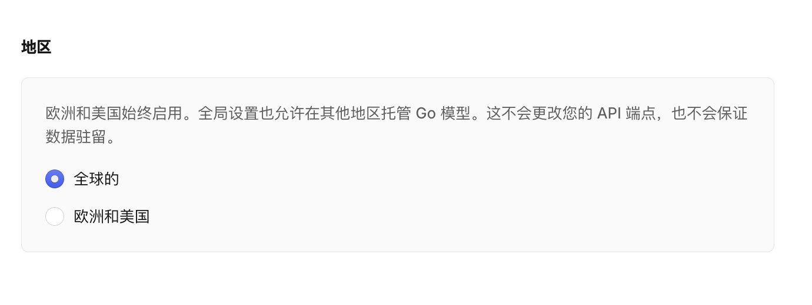
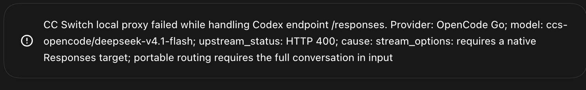

用 CC Switch 把 OpenCode Go 接入 Codex：配置、参数与故障排查¶
本文记录 2026 年 11 月在 macOS 上使用 CC Switch 4.0.25，将 OpenCode Go 的 DeepSeek V4.1 Flash 接入 Codex 的配置过程。模型目录和服务端接口可能变化，照做前请以 CC Switch 界面和 OpenCode 官方文档当前内容为准。
先看最终配置¶
Codex 使用 OpenAI Responses API；OpenCode Go 的 DeepSeek V4.1 Flash 原生使用 OpenAI Chat Completions。要让两端对话，需要 CC Switch 在中间转换请求格式：Codex 保持 Responses，CC Switch 的上游格式选择 Chat Completions（需转换），再把请求发给 OpenCode Go。
Codex（Responses） → CC Switch 本地转换 → OpenCode Go /chat/completions → DeepSeek V4.1 Flash
本案例最终使用 OpenCode 官方 Go 基础地址 https://opencode.ai/inference/go/openai/v1。日志确认 DeepSeek 和 MiMo 请求都到达该地址下的 /chat/completions；用户随后确认 Codex 已能正常使用。OpenCode Go 文档将 DeepSeek V4.1 Flash 列为 Chat Completions 接口，CC Switch 文档说明可以把 Codex 的 Responses 请求转换到上游 Chat Completions。OpenCode Go 模型接口表 · CC Switch：Codex 上游格式
配置步骤¶
1. 在 OpenCode Console 准备 Go 工作区¶
登录 OpenCode Console，确认当前 workspace 已订阅 OpenCode Go，并在这个 workspace 中创建 API Key。CC Switch 的 OpenCode Go provider 使用这把 Key 验证上游请求。不要把 Key 写入文档、截图、shell 命令或公开日志。
DeepSeek V4.1 Flash 和 V4 Pro 还要求 workspace owner 或 admin 在 Settings → Privacy → Regions 中选择 Global。这是模型可用区域设置，不是 API 地址或本机代理设置。截图里的“允许付费端点训练”开关与 DeepSeek 区域要求无关，保持原值即可。OpenCode Go：受限模型设置

图 1：OpenCode Console → Settings → Privacy → Regions。截图已裁去浏览器地址栏和 workspace 标识。
2. 在 CC Switch 的 Codex 页面添加 OpenCode Go¶
打开 CC Switch 左侧的 Codex 页面。本案例使用 聚合（Aggregation） 模式：OpenAI Official 仍是默认 provider，OpenCode Go 作为额外 provider 加入模型列表。选用 OpenCode Go 模型时，Codex 中会显示 ccs- 前缀；不带此前缀的默认模型仍走 OpenAI Official。
添加或编辑 OpenCode Go provider 时使用以下参数：
| CC Switch 参数 | 本案例的值 | 作用 |
|---|---|---|
| 连接模式 | 聚合 | 让官方 provider 继续作为默认项，并把其他 provider 的模型加入 Codex 模型列表。也可以选择路由模式，将 Codex 的当前目标设为某个 provider。 |
| API Key | OpenCode Go workspace 创建的 Key | 用于 OpenCode Console 上游鉴权。只填在 CC Switch 的 Key 字段。 |
| API 请求地址 | https://opencode.ai/inference/go/openai/v1 |
上游 API 基础地址。CC Switch 根据协议追加 /chat/completions。 |
| Full URL | 关闭 | 此服务使用标准 OpenAI-compatible 路径；不需要把 /chat/completions 手工写进基础地址。Full URL 用于服务商要求完整的非标准 endpoint。 |
| 上游格式 | Chat Completions（需转换） | Codex 发 Responses 请求；CC Switch 本地将请求转成上游 Chat Completions，并把响应转回 Codex 能读取的 Responses 格式。 |
| 菜单显示名 | DeepSeek V4.1 Flash |
给 Codex 模型选择菜单看的名称。 |
| 实际请求模型 | deepseek-v4.1-flash |
CC Switch 发给 OpenCode Go 的模型 ID，需与 OpenCode 当前模型目录一致。 |
| 上下文窗口 | 1048576（模型条目） |
模型目录中声明的上下文值；应以该模型上游当前支持值为准。CC Switch 还可设置 provider 级 model_context_window 覆盖值。 |
| 思考等级 | low, high, max |
让 Codex 菜单显示该模型支持的等级。请求转换时，CC Switch 会把 Codex 的 reasoning 设置映射到上游格式。 |
| 默认推理强度 | low |
Codex 当前默认采用的推理强度；必须属于模型映射允许的等级。 |
本机配置同时记录了模型条目的 1048576、provider 级 model_context_window = 1000000 和自动压缩阈值 900000。provider 级窗口会覆盖模型目录中的值，因此不要把两组数字都当成彼此独立的生效上限；新配置应按上游限制设置 provider 级窗口和压缩阈值。CC Switch 文档解释了模型映射、上下文窗口和自动压缩字段的关系。CC Switch：Codex 模型映射和上下文
注意：选择 Chat Completions 后，Codex 的请求必须经过 CC Switch 本地转换服务。保持 CC Switch 的 Codex 聚合/路由工作模式有效，不要切成绕过本地代理的直连模式。CC Switch 官方文档将 Chat Completions 标为需要本地路由的上游格式。CC Switch：上游格式说明
3. 重启 Codex 并选择模型¶
保存后，完全退出并重开 Codex 桌面版（macOS 使用 ⌘Q，只关闭窗口不够）。CC Switch 会提示 Codex 启动时读取模型目录；不重启时，新 provider 或模型可能不出现。
在 Codex 中选择 ccs-opencode/deepseek-v4.1-flash，发一条短消息验证。其他 Codex 会话仍可选默认 OpenAI Official，或选择聚合列表中的其他 ccs- 模型。
排障过程：症状、原因与修复¶
问题一：本地代理报 502，或界面反复重连¶
现象。Codex 连接 CC Switch 的 http://127.0.0.1:15721/v1 失败；请求本机 /v1/models 时出现 502。
原因。macOS 的 http_proxy、https_proxy 和 all_proxy 指向外部代理，但没有为 loopback 地址设置例外。Codex 访问 127.0.0.1 时也被送进外部代理，因此请求没有直达 CC Switch。
修复。在 shell 启动文件中设置回环地址例外；若 Codex 从 Finder 或 Dock 启动，还要给新的 GUI 进程设置 launchd 环境，并重启 Codex：
export no_proxy="localhost,127.0.0.1,::1"
export NO_PROXY="$no_proxy"
launchctl setenv no_proxy "localhost,127.0.0.1,::1"
launchctl setenv NO_PROXY "localhost,127.0.0.1,::1"
用不经过系统代理的本机请求检查 CC Switch 服务：
curl --noproxy '*' -i --max-time 3 http://127.0.0.1:15721/v1/models
本案例配置例外后，同一接口返回 HTTP 200。NO_PROXY 只让本机请求绕过系统代理；CC Switch 发往 OpenCode 的上游请求仍按其网络设置出站。新环境变量只会被之后启动的 GUI 进程继承，所以要完全退出并重开 Codex。
问题二：HTTP 400，提示 DeepSeek 需要 Global 区域¶
现象。上游返回：This Go model requires Global regions. Select Global in your workspace's Privacy settings to use it.
原因。请求已经到达 OpenCode Go；DeepSeek V4.1 Flash 对 workspace 区域有要求。它不是本地代理 502，也不是 Wi‑Fi、Full URL 或 NO_PROXY 问题。
修复。在与该 API Key 对应的 OpenCode workspace 打开 Settings → Privacy → Regions → Global 并保存。此项需要 owner/admin 权限。如果设置后仍收到同样提示，先确认 Key 和所改设置属于同一个 workspace。官方受限模型说明
问题三：HTTP 400，提示 stream_options 和 portable routing¶
现象。Codex 请求 /responses 时，OpenCode 返回：
stream_options: requires a native Responses target;
portable routing requires the full conversation in input

图 2：错误发生时，Codex 的 Responses 请求已到达上游，但 OpenCode 的兼容路径拒绝了这次请求。
排查和原因。日志先后显示两个现象：旧的 /zen/go/v1 地址出现过 404/不可用；改用官方地址后，请求确实到达 /inference/go/openai/v1/responses，但仍收到上述 400。因此单改 URL 不够。结合错误内容和官方模型接口表，问题在于：Codex 的 Responses 请求被直接交给 OpenCode Console 的跨协议转换路径，而 DeepSeek V4.1 Flash 的原生接口是 Chat Completions。错误正文要求 portable 路径提供完整对话输入，但日志没有保存请求体，无法仅凭日志断定触发条件是 stream_options、会话状态，还是两者组合。
修复。最终配置同时满足两个条件：
- 将地址从旧的
/zen/go/v1改为官方 Go 基础地址https://opencode.ai/inference/go/openai/v1。 - 将 CC Switch 上游格式从 Responses（原生） 改为 Chat Completions（需转换），让 CC Switch 本地完成协议转换。
之后的 CC Switch 日志显示，DeepSeek 与 MiMo 请求都发往 https://opencode.ai/inference/go/openai/v1/chat/completions；用户确认故障已解决。这里的成功依据是用户确认和路由目标日志；日志本身没有记录 HTTP 响应码。OpenCode 官方 Codex 示例仍使用 Responses wire API；在本方案中保持 Codex 的协议不变，由 CC Switch 处理上游转换。OpenCode Codex 配置 · OpenCode Go 的 DeepSeek 接口 · CC Switch 的转换行为
Full URL 为什么保持关闭¶
CC Switch 默认把 API 请求地址当作基础前缀，再按上游协议追加接口路径。这个案例填写：
基础地址： https://opencode.ai/inference/go/openai/v1
上游格式： Chat Completions（需转换）
最终上游请求： https://opencode.ai/inference/go/openai/v1/chat/completions
如果把完整 /chat/completions 路径填进普通基础地址，CC Switch 仍可能继续拼接路径；如果启用 Full URL，CC Switch 则会把填写值原样使用。官方文档说明 Full URL 用于非标准 endpoint，且需要本地路由；本例遵循标准路径，因此关闭它。CC Switch：Full URL 模式